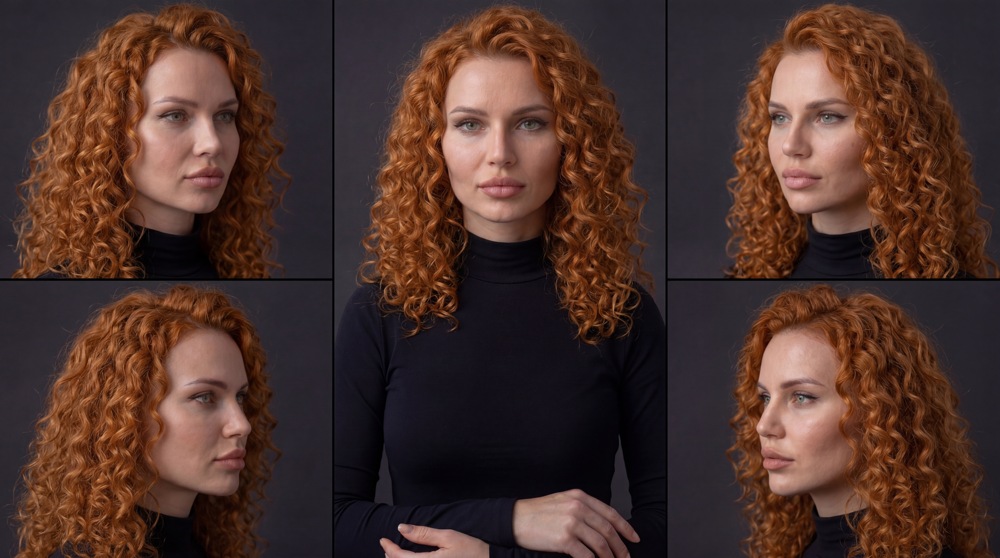
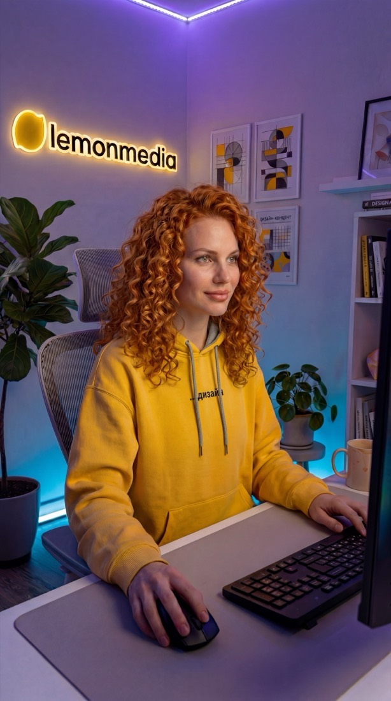

lemonmedia — дизайн-система
Единый стиль бренда для всех носителей: сайт, интерфейсы, SMM-контент, КП, презентации. Каждый раздел устроен одинаково: живой пример, как пользоваться, что нельзя и почему.
- Figma «LM • SMM DESIGN SYSTEM — v1»: https://www.figma.com/design/W5OADlZzEMJGmjxnpNsIjl
- Логотипы SVG: 06 Маркетинг lemonmedia/Бренд/
- Ассеты Ксюши: design-system/assets/
- Разбор референсов Ивана (видео 06.08.2026): Битрикс24, Яндекс Алиса, Wazzup, Postmypost
- Шаблоны сайта: Сайт/lemon-media-site-prototype/docs/SITE_PAGE_TEMPLATE.md и docs/CASE_TEMPLATE.md
Правится только system.json. Эта страница собирается из него скриптом build/build.py.
01Основы бренда3 принципаканон
lemonmedia (всегда строчными) - подписка на ведение соцсетей под ключ. Продаём предсказуемость: фиксированная цена, готовый опубликованный контент, делают живые люди. Тон прямой, на «ты», senior с равным. Из этого следуют три дизайн-принципа - они выше любого частного правила ниже.
Всё, о чём говорим, демонстрируем: живые скриншоты продукта, реальные работы, видео, лица.
Чистые заливки лимона и фиолетового, свечения на тёмном. Мы про контент - яркость должна быть везде.
Лендинг и интерфейс собираются из скруглённых блоков-карточек, как приложение. Много воздуха, один уровень внимания на блок.
Как пользоваться
- Спорный визуальный выбор проверяй этими тремя принципами, а не вкусом.
- Если элемент не служит ни одному из трёх - он лишний.
Нельзя
- Рисованные мультяшные иллюстрации и стоковые векторные человечки.
- Серая простыня без цветных подложек - мы про контент, яркость обязательна.
Почему так
Принципы - единственное, что не меняется при смене носителя. Цвета и размеры у сайта и карусели разные, а «показывать, а не рассказывать» одинаково.
Источник: DESIGN.md §1, разбор референсов Ивана 06.08.2026
02Логотип2 рабочих файла + 4 исходникаканон
Рабочие файлы для вёрстки - logo-dark.svg и logo-white.svg. Остальные четыре в папке Бренда - исходники.
Охранное поле - высота символа-лимона со всех сторон. Минимальная ширина текстовой части: 120px экран, 25мм печать.
logo-dark.svgтёмный с символом, обрезанный - вёрстка на светломlogo-white.svgбелый с символом, обрезанный - вёрстка на тёмномLemon Media основной лого ТЕМНЫЙ/БЕЛЫЙ С СИМВОЛОМ.svgквадрат 1080, исходник… без символа.svgтекст без лимона - узкие места и жёлтые фоныКак пользоваться
- Светлые фоны (белый, lemon-100, purple-050) - тёмная версия.
- Тёмные фоны (чёрный, purple-600, «космос», фото с затемнением) - белая версия.
- На жёлтой заливке lemon/500 бери тёмный логотип БЕЗ символа либо ставь лого на белой плашке.
- Символ-лимон отдельно - только фавикон, аватарки соцсетей и другие малые пространства.
Нельзя
- Перекрашивать: лимон только #EECB03, текст #1D1D1B или белый.
- Тени, обводки, градиенты, наклоны.
- Ставить логотип ближе, чем высота символа-лимона, к краю или чужому объекту.
- Текстовая часть уже 120px на экране и 25мм в печати.
Почему так
На жёлтом фоне символ-лимон сливается с подложкой и логотип читается как обрезанный. Охранное поле в высоту символа - чтобы лого не слипалось с соседним блоком в плотных шапках.
Источник: Файлы: 06 Маркетинг lemonmedia/Бренд/*.svg
03Цвет6 пар, 1 жёлтыйканон
Основа - чёрный, жёлтый, белый. Фиолетовый - второй акцент. Мягкие lemon-100 и purple-050 - подложки карточек и секций. Пар «поверхность × текст» ровно шесть, новых не изобретать.
neutral
#FFFFFF#EFEFEF#262626#1E1E1E#020202#000000lemon
#FFF3C4lemon light — мягкие подложки#FFDB4E#EECB03КАНОН — единственный жёлтый lemonmedia#D9B900hover/pressed для lemon-500purple
#F4E8FF#DFCCFF#C582FF#AF53FF#9747FFакцент SMM, свечения#7D00EAакцент веба: кнопки, текстовые акцентыoverlay
#00000099#FFFFFFCCweb
#5E5E66вторичный текст#8A8A93#F6F6F7#FBFBFC#EBEBEE#E2E2E6#2EB872#E5484D#4361EEsemantic
#FFFFFF#020202#EECB03#000000только чёрный на лимоне, белый запрещён#7D00EA#FFFFFF#000000#FFFFFF#FFF3C4#F4E8FF#F4F6FAфон страницы по умолчаниюcool
#F4F6FAхолодный светло-серый — фон страницы и левая зона раскола#E8ECF3холодный серый глубже — полосы и линииlavender
#E4EAF7холодный лавандовый — правая зона витриныhighlight
#FFF176подсветка правок в клиентских документах и КПУтверждённые пары «поверхность × текст» — только эти шесть
Контраст: можно и нельзя
Как пользоваться
- Бери цвет токеном, а не HEX-ом: --lm-color-lemon-500, а не #EECB03.
- Фон и текст бери готовой парой из шести - контраст в них уже проверен.
- Жёлтый в композиции с расколом экрана живёт только в акцентах: кнопка, галочки, бейджи.
Нельзя
- Белый текст на lemon/500 - слабый контраст, на лимоне только чёрный.
- Жёлтый и фиолетовый мелким текстом на белом - только от H3 и крупнее, мелкий текст neutral/muted.
- Градиент white → yellow - DEPRECATED, узел 40:2939 в Figma.
- Подчёркивания и маркеры-выделения под текстом - их в системе нет.
Почему так
Шесть пар - это не ограничение ради ограничения. Каждая пара прошла проверку контраста, а седьмая пара, придуманная на ходу, её не проходит и ломает читаемость на телефоне.
Источник: tokens.json → color, Figma «LM • SMM DESIGN SYSTEM — v1»
04Типографика9 стилей веб + 10 SMM, 1 гарнитураканон
Manrope - единственная гарнитура системы, веса 400/600/700/800. Стиль выбирается по РОЛИ в макете, а не по желаемому размеру. Размер внутри роли задан токеном и вручную не подбирается.
Один смысловой удар на экран: цифра-рекорд или главная строка
Заголовок страницы
Заголовок секции
Заголовок карточки или блока внутри секции
Абзац-подводка сразу под заголовком
Основной текст
Кнопки, навигация, шапки таблиц
Подписи под элементами
Служебная метка-рубрика
SMM-шкала — канвас 1080×1350, стили LM/* в Figma
200ExtraBold · 100%160SemiBold · 100%100SemiBold · 100%90SemiBold · 100%80SemiBold · 105%70Bold · 105%50Regular · 115%45Regular · 115%40Regular · 115%35Bold · 110%30SemiBold · 110%Как пользоваться
- Display - один смысловой удар на экран: цифра-рекорд или главная строка. Больше одной Display на экран не бывает.
- H1 - заголовок страницы, ровно один. H2 - заголовок секции. H3 - заголовок карточки или блока внутри секции.
- Lead - абзац-подводка сразу под заголовком, один на секцию. Дальше идёт Body.
- UI 17px - кнопки, навигация, шапки таблиц. Small 15px - подписи под элементами.
- В SMM бери стиль из Figma (LM/*), в вебе - токен. Свои размеры не набирай.
Нельзя
- Второй шрифт в любом виде.
- Текст мельче 15px в вебе - кроме служебных меток на миниатюрах.
- Два конкурирующих уровня внимания в одном блоке: Display рядом с H1.
- Висячие предлоги и случайные переносы в заголовках - проверяются на финальном тексте.
Почему так
Вопрос «какой размер взять» возникает, только когда стиль выбирают по величине. Если выбирать по роли, размер не нужен: роль в макете одна, стиль к ней один.
Источник: tokens.json → typography-web / typography-smm, Figma text styles LM/*
05Сетки2 сетки: веб и SMMканон
Две сетки на всё агентство. Веб - контейнер фиксированной ширины по центру. SMM - канвас 1080×1350 с защитным полем, за которое не выходит смысл.
Веб — контейнер 1328px
Зазор карточных секций 20-24px. Вертикальный ритм секций 96–128px.
SMM — канвас 1080×1350, safe area 960×1230
12 колонок · gutter 20
Текст, цифры, навигация и лицо — внутри safe area. Декор и свет могут выходить наружу.
Как пользоваться
- Веб: весь контент внутри контейнера --lm-container. Карточные секции - grid с зазором 20-24px.
- SMM: текст, цифры, навигация и лицо - строго внутри safe area 960×1230.
- SMM: декор, свет и части фото могут выходить за safe area наружу, это разрешено.
- Колонок в SMM двенадцать, gutter 20 - блоки выравниваются по ним, а не на глаз.
Нельзя
- Контент шире контейнера или прижатый к краю канваса.
- Смысловые элементы в зоне обрезки: в ленте и превью края режутся.
- Своя ширина контейнера на отдельной странице.
Почему так
Safe area 60px нужна потому, что соцсети режут края в превью и в разных лентах по-разному. Всё, что должно быть прочитано, обязано пережить обрезку.
Источник: tokens.json → grid
06Геометрия4 радиуса веб + 8 SMMканон
Скругления - фирменная пластика, они крупные. Мелкие скругления «как в документах» читаются как чужие.
Радиусы — веб
10px16px24px100pxSMM-радиусы (1080×1350): 0, 10, 40, 50, 60, 80, 100, full.
Шкала отступов — веб
Вложенность радиусов
Как пользоваться
- Веб: sm 10 - кнопки и теги; md 16 - вложенные блоки и медиа; lg 24 - карточки и секции; pill 100 - бейджи и пилюли-CTA.
- Вложенный элемент всегда скруглён меньше родителя: медиа md внутри карточки lg.
- Формы: скруглённый прямоугольник в продуктовых интерфейсах, пилюля - на маркетинговом сайте.
- Отступы бери из шкалы: веб 4-128 (секции 96-128), SMM 20/30/40/60/80/100/120/160.
Нельзя
- Радиус 4-8px на карточках и секциях - это чужая пластика.
- Одинаковый радиус у родителя и вложенного медиа - выглядит как ошибка вёрстки.
- Отступы «на глаз» мимо шкалы.
Почему так
Радиус и отступ - половина узнаваемости бренда. Цвет можно перебить фотографией, а пластика блоков читается даже в чёрно-белом скриншоте.
Источник: tokens.json → radius-web / radius-smm / spacing-web / spacing-smm
07Атмосфера: тени и свет3 тени, 2 свеченияканон
Свет локальный и смысловой: он подсвечивает главный объект или эмоциональный акцент. Один доминирующий glow на экран, второй - только поддерживающий.
Градиенты-подложки
Как пользоваться
- Soft - мягкое отделение блока от фона. Card - карточки на светлом. Pop - то, что выходит поверх: модалка, выпадашка.
- glow-lemon - под primary-кнопкой и под главным объектом. glow-purple - под вторичным акцентом.
- На тёмном фоне свет делается локальными пятнами glowspot, а не заливкой всего фона.
Нельзя
- Два конкурирующих свечения в одном экране.
- Тень на всём подряд: если светятся все блоки, не светится ни один.
- Жёсткие контрастные тени - все тени низкоконтрастные и мягкие.
Почему так
Свечение - это указатель внимания. Второе свечение делит внимание пополам и обнуляет первое.
Источник: tokens.json → shadow / gradient
08Движение3 сценарияканон
Интерактив - часть бренда: с блоками можно взаимодействовать, и это должно чувствоваться.
Как пользоваться
- Микро-отклик (наведение, нажатие): 150ms ease, подъём translateY(-2px) плюс усиление тени или свечения.
- Появление при скролле: 300-400ms ease-out, сдвиг снизу 16-24px плюс проявление. Один каскад на секцию, задержка между карточками 60-90ms.
- Демонстрации продукта - собственные скринкасты, зациклены аккуратно, автоплей без звука.
Нельзя
- Параллакс ради параллакса, вращения, bounce на серьёзных блоках.
- Анимация двух конкурирующих объектов одновременно.
- Покупные стоковые анимации.
Почему так
Одинаковая длительность отклика по всем носителям - это то, по чему интерфейс ощущается сделанным одной командой, даже когда страницы верстали разные люди.
Источник: DESIGN.md §7
09Компоненты и состояния6 компонентов, 5 состоянийчастично новое
Элемент живёт не в одном виде. Если состояние не описано - его придумывает каждый исполнитель заново, и кнопка в кабинете начинает вести себя не так, как на сайте.
Кнопка — варианты
Одна primary на экран. Остальные действия берут secondary, dark или ghost.
Кнопка — состояния
Отклик одинаковый у кнопок и карточек: подъём 2px плюс усиление свечения, 150ms ease.
Поле ввода — состояния
Ошибка всегда сопровождается текстом под полем. Только цветом ошибку не сообщаем.
Карточка — состояния
Радиус lg 24. Вложенное медиа всегда меньше родителя: md 16.
9 слайдов, 4:5
9 слайдов, 4:5
9 слайдов, 4:5
Бейдж и статусы
На сайте бейдж - только самостоятельный статус или фильтр, не надзаголовок.
Строка таблицы — состояния
Слой кабинета. Шапка UI 17px, строки Body.
Как пользоваться
- Бери готовый класс из components.css, не собирай элемент заново.
- Одна primary-кнопка на экран. Остальные действия - secondary, dark или ghost.
- Отклик на наведение одинаковый у кнопок и карточек: подъём 2px плюс усиление свечения, 150ms.
- Поле с ошибкой всегда показывает текст ошибки под собой, только цветом ошибку не сообщаем.
- Заблокированный элемент теряет тень и свечение, курсор not-allowed.
Нельзя
- Новый компонент без нужды: сначала проверь, решается ли задача существующими.
- Свои цвета состояний - hover-цвет берётся из lemon/600 и purple, а не подбирается.
- Бейдж как декоративный надзаголовок перед H1, H2, H3 на сайте.
Почему так
Состояния - это половина компонента. Без них разработчик додумывает поведение сам, и система расходится не в цвете, а в ощущении.
Источник: components.css, sections.css
10Носитель: сайт14 секций-мастеровканон
Страницы собираются из секций-мастеров site-kit: хедер-капсула, hero светлый и тёмный, логобар, бенто-фичи, сплиты с мокапами, шаги, прайсинг, метрики, отзывы, форма, FAQ, CTA, футер.
Как пользоваться
- Новый лендинг - перестановка мастеров с новым контентом.
- Светлые секции чередуются с тёмными. Одна жёлтая CTA на экран.
- Живые скриншоты в мокапах устройств, реальные работы.
- Кейсы: общий шаблон плюс проектный скин - тёмная обложка, один основной цвет проекта, один акцент.
Нельзя
- Изобретать новые секции без нужды.
- Мешать фиолетовый lemonmedia с цветом проекта внутри кейса.
- Слово «контент-месяц» - только «контент-план».
- Декоративные надзаголовки перед заголовками секций.
Почему так
Единообразие даёт скорость: страница собирается за часы, а не рисуется с нуля. Но мастера не заменяют композицию - карточки нужны только когда сравнивают равные вещи.
Источник: sections.css, site-specimen.html, docs/SITE_PAGE_TEMPLATE.md, docs/CASE_TEMPLATE.md
11Носитель: SMM 1080×13503 мастера поста + 9 слайдовканон
Собирается только из мастеров Figma через компоненты. Свои элементы не рисуем: выбираем мастер, заменяем контент, свапаем ракурс Ксюши, гоняем QA 3/3.
Как пользоваться
- Заголовок - один смысловой удар, без сирот и случайных переносов.
- Ключевое слово выделяется цветом: жёлтый на тёмном, фиолетовый на светлом.
- Слайд-навигация: POST / 01 и LEMONMEDIA в футере, точки-прогресс в каруселях.
- Единый CTA бренда - «Разбор», кодовое слово в комментариях.
Нельзя
- Рисовать элемент вручную мимо мастера.
- Выносить текст, цифры или лицо за safe area.
- Публиковать без QA-гейта 3/3.
Почему так
Производство идёт партиями на десятки клиентов. Любой элемент, нарисованный вручную, ломает партийную сборку и не переиспользуется в следующем месяце.
Источник: Figma «LM • SMM DESIGN SYSTEM — v1», скиллы /kp-tz и /kp-plan
12Носитель: кабинет и дашбордыслой в работепробел
Продуктовые интерфейсы: Lemon Publisher, Пульт. Тёмный сайдбар плюс белые карточки на surface, жёлтая - активный пункт и ключевое действие, статусы success и danger.
Как пользоваться
- Цвета только из ядра: фиолетовый интерфейса - purple/600, жёлтый - lemon/500.
- Радиус форм - скруглённый прямоугольник sm/md, пилюля остаётся маркетинговому сайту.
- Плотность выше, чем на сайте: шкала отступов та же, но берутся меньшие ступени.
Нельзя
- Заводить свою палитру под кабинет - это уже произошло и будет мигрировано.
- Свой шрифт и свои радиусы под «продуктовость».
Почему так
Кабинет - продукт подписки, его увидит каждый клиент. Если он выглядит как чужой сервис, подписка перестаёт читаться как продукт lemonmedia.
Источник: 09 Подпроекты/Lemon Publisher
13Носитель: КП и документы1 шаблонканон
Белый фон, Manrope, чёрные заголовки, жёлтые выделения-подложки lemon-100, таблицы с серыми шапками.
Как пользоваться
- Правки в документе подсвечиваются жёлтой заливкой.
- Каждая единица контента и «План публикаций» - с новой страницы.
- Бренд «lemonmedia» строчными, дефис вместо тире, «е» вместо «ё».
Нельзя
- Цветные фоны страниц и декоративная графика в клиентских документах.
- Отдавать клиенту файл вместо ссылки на документ.
Почему так
Документ читает клиент, а не дизайнер. Всё, что не помогает согласовать, мешает.
Источник: Скиллы /kp-docs, /kp-plan, /kp-pravki
14Ксюша - аватар бренда5 канонических ракурсовканон
Постоянный визуальный носитель бренда. Лицо и идентичность неизменны, контекст вокруг неё меняется по смыслу поста.


Как пользоваться
- Стартуй всегда с master-изображения ksusha-master-5views.jpg - единственный допустимый исходник.
- Меняй: одежду и аксессуары, эмоцию, позу, свет, окружение, сцену.
- В промпте описывай контекст вокруг лица, лицо не трогай.
- Перед публикацией сверь результат с master reference.
Нельзя
- Менять геометрию и пропорции лица, форму и цвет волос, возраст, комплекцию.
- Генерировать с нуля без master-изображения.
Почему так
Аватар работает как лицо бренда только при полной узнаваемости. Сдвиг черт на 10% превращает Ксюшу в другую девушку, и накопленное узнавание обнуляется.
Источник: design-system/assets/, скилл /ksusha-outfit
15Тексты в макетах4 правилаканон
Правила письма одинаковы во всех носителях - от слайда карусели до кнопки в кабинете.
Как пользоваться
- lemonmedia - всегда строчными, одним словом.
- Дефис вместо тире, «е» вместо «ё».
- Прямой тон на «ты», без штампов и без обещаний заявок, продаж и охватов.
- Единый CTA: «Разбор» в SMM, «Получить бесплатно» и демо-сценарии на сайте.
Нельзя
- «В современном мире», «индивидуальный подход», «команда профессионалов».
- Обещания результата в цифрах, которых мы не контролируем.
Почему так
Тон - такая же часть узнаваемости, как жёлтый. Текст в чужом тоне ломает бренд сильнее, чем неверный оттенок.
Источник: DESIGN.md §11, Библия бренда lemonmedia.md
16QA-гейт арт-директора3 из 3канон
Проверка каждого макета перед выпуском. PASS только 3 из 3, иначе правка и повторная проверка.
Как пользоваться
- Геометрия: канвас точный, для SMM 1080×1350 и safe 60, поля одинаковые, элементы на сетке, ничего не обрезано.
- Типографика: только системные стили, нет случайных переносов и висячих слов, один уровень внимания.
- Визуал: контраст пар соблюдён, чистые зоны вокруг главного, лицо Ксюши равно master reference, один доминирующий glow.
Нельзя
- Выпускать при 2 из 3.
- Проверять по памяти вместо сверки с витриной.
Почему так
Гейт из трёх пунктов ловит больше 90% типовых ошибок партии и занимает минуту. Без него ошибка уходит клиенту и стоит круга правок.
Источник: DESIGN.md §12
Открытые вопросы
Места, где система пока не даёт однозначного ответа. Решение за Иваном.
В токенах Display и заголовки заданы через clamp() - размер плывёт от ширины окна. При этом текст канона прямо говорит: шкала фиксированная, не резиновая. Два утверждения противоречат друг другу, нужно решение Ивана.
Влияет на весь сайт: 73 страницы.tokens.css и tokens.json дают 1328px, старый текст §5 говорил 1200px. В витрине принято 1328 как значение из токенов, но подтверждение нужно.
Влияет на все страницы сайта.Сет для интерфейсов не выбран. Кандидаты Lucide или Phosphor, линия 1.5-2px. В маркетинге сейчас эмодзи - это осознанный приём.
Блокирует слой кабинета.Правила обработки живых фото и скриншотов: свет, фон, кадрирование. Частично живёт в Визуальном паспорте производства.
Влияет на SMM и кейсы.Focus-стили для форм и кнопок в site-kit есть. Остаётся аудит контраста мелких текстов и aria-разметка компонентов.
Влияет на кабинет.Шаблон превью для ссылок и фавикон из символа-лимона.
Влияет на сайт.